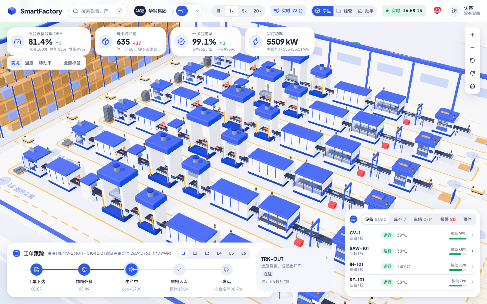
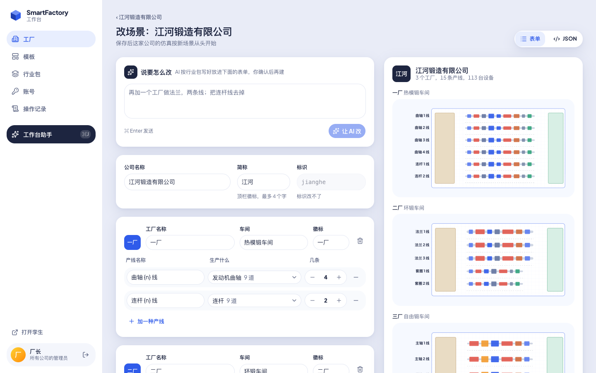
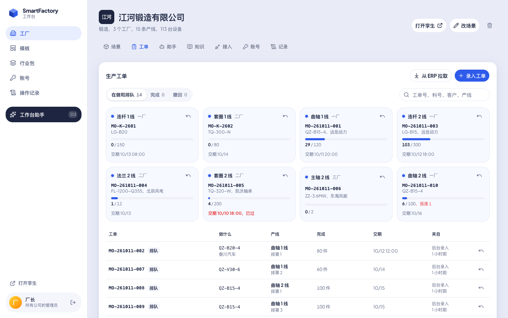
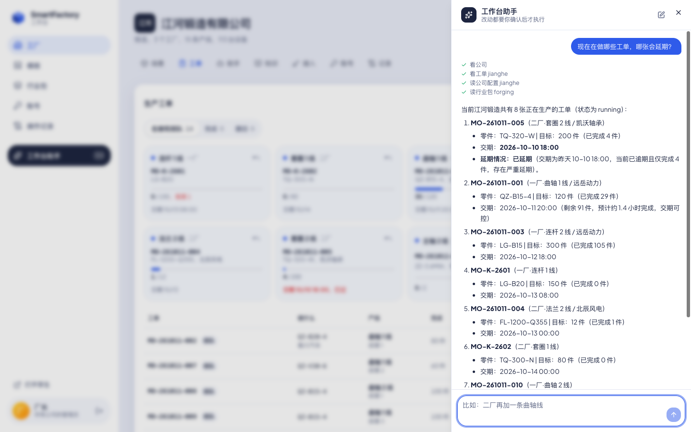
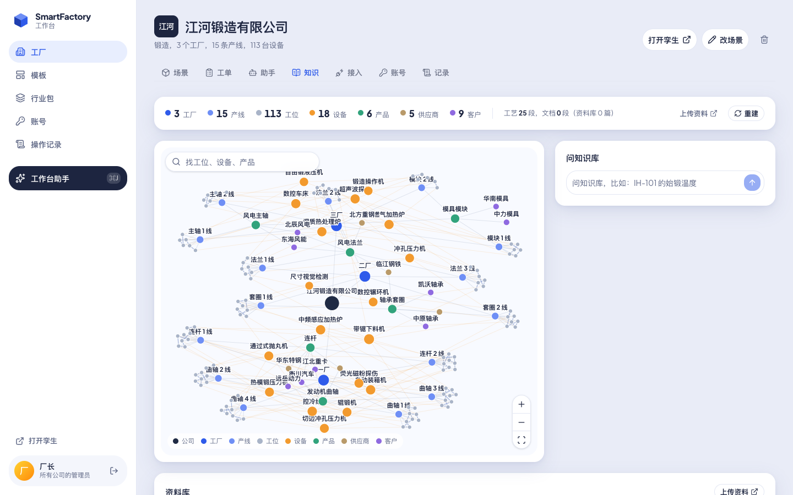

Your factory, live, on your own server.
A console to build it, a 3D twin to watch it run, and AI assistants that know it, in one program. Start from a template, a few sentences, or your own config.

The demo is a forging company with three plants. Its machines report over MQTT, Modbus and OPC UA from emulated equipment.
Build it in the console
Start from a built-in template, describe your site and let the AI write it, or paste a config. Plants, lines, machines and routes lay themselves out on the floor plan as you go.

- Six industries built inForging, machining, automotive, food and drink, batteries, air conditioners.
- The AI fills the gapsNo industry pack for ceramics or pharma? It writes one, products, machines and routes, and the engine checks it before you build.
- Templates travelSave your factory as a template, export it as a file, import it on another server.
Run it on your ERP's orders
Production orders come in from your ERP. Each goes to a line that makes its part, the lines work through them by due date, and your ERP hears when an order starts and when it is done.

- Push or pullThe ERP posts orders with its own token, or the server fetches them and maps the fields, rows as arrays included.
- Signed callbacksStarted and finished orders, with good and scrapped counts, posted back with an HMAC-SHA256 signature.
- Like the real plantA line with no order waits for one. Or keeps simulating, for a demo.
Ask it what is going on
Assistants answer from the twin, the orders and your documents: which machine is down, which order will be late, what the work instruction says. In the console, the assistant proposes changes and waits for you to confirm.

It knows your process
Every plant, line, station, machine, product, supplier and customer is a node in a knowledge graph, rebuilt when the factory changes. Documents link to what they mention, so a question about IH-101 finds the induction furnace's process card.

Connect what you already have
Machines that report over MQTT need no setup. PLCs, gateways and brokers you already run are read where they are.
sf/{company}/{plant}/{machine}/{field}/mcp, a command line with -jsonWhat else it does
- Live numbersOEE, output, yield and power for every plant, line and machine.
- Real and simulated, side by sideA machine that reports its readings shows them; the rest of the plant keeps simulating around it.
- Alarms and upkeepBreakdowns, planned maintenance, and die and tool life counted part by part.
- Quality you can traceMeasurements with SPC drift alarms, defects traced to the material lot and its supplier.
- Try a change firstRun a plant ahead with a change, several times over, and compare it with leaving it as it is.
- Energy in moneyPower and fuel priced by peak, flat and valley hours.
- Shipments and complaintsFinished orders leave by truck; a customer complaint comes back to the order it was about.
- Roles and a recordMember, operator and administrator tokens, and every change logged with who made it and from where.
- On a phoneThe twin and the console both work on a small screen.